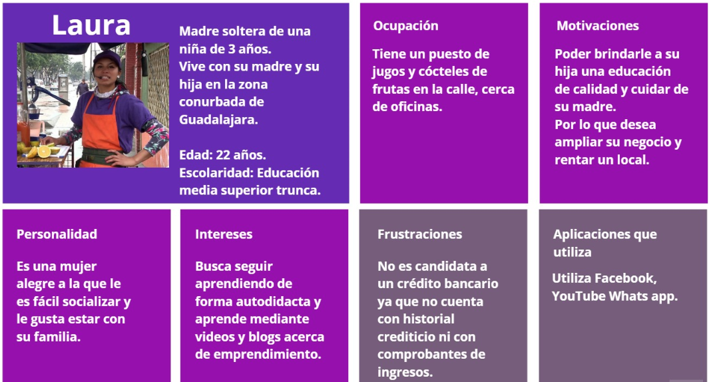
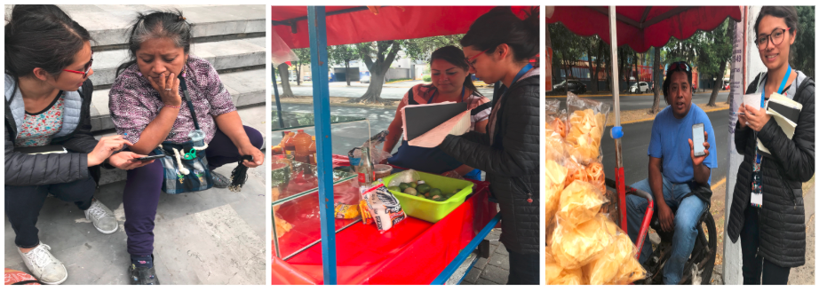
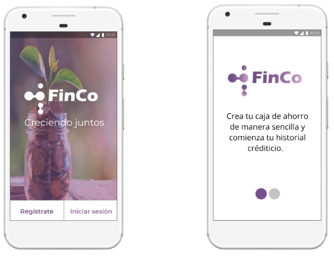
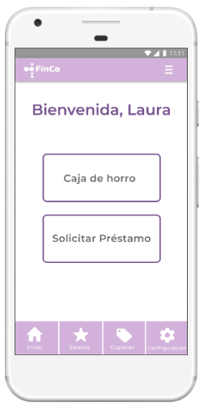
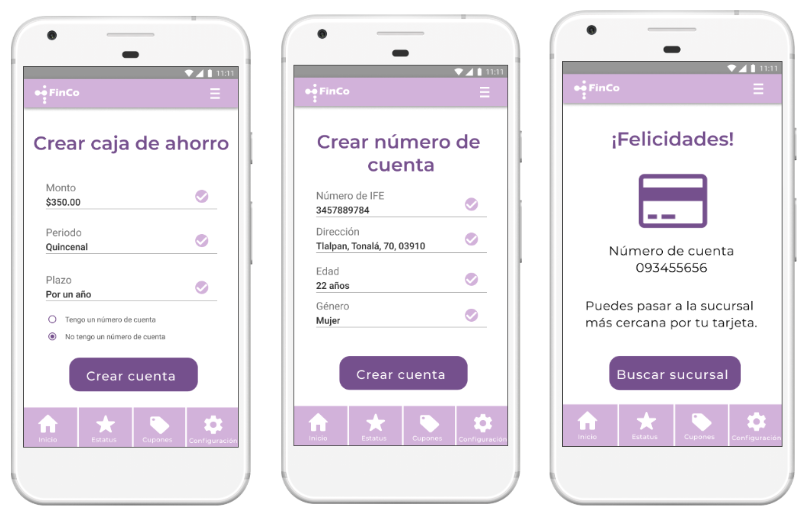
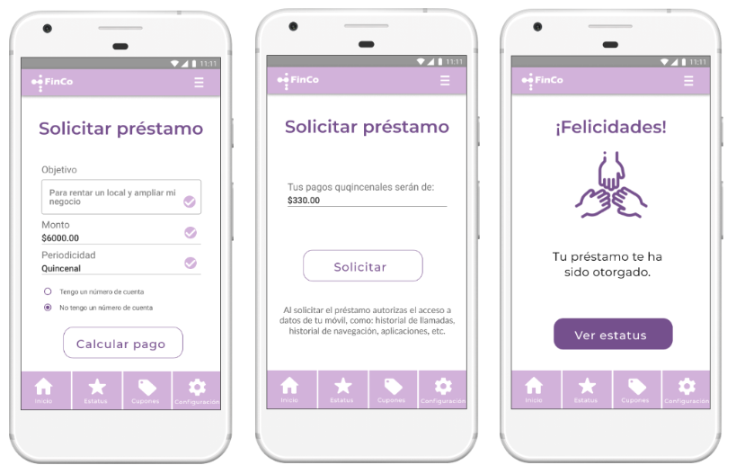
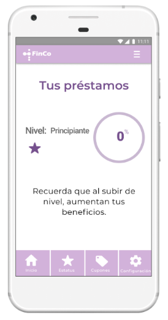
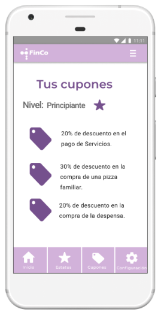

FINCO

Resumen
Durante Jalisco Talent Land 2019, participé junto con mi squad en Talent Hackathon, en el reto de Citibanamex, que tuvo por objetivo crear un producto de inclusión financiera. Para ello, desarrollamos Finco, una aplicación orientada en la economía colectiva para micronegocios que se encuentran en la informalidad. Finco es una caja de ahorro, donde el usuario elige el monto y el periodo de sus aportaciones. Asimismo, con base en su comportamiento de ahorro, el uso de su tarjeta de débito/crédito y, la recolección y análisis de la data de su dispositivo móvil, Finco le podrá ofrecer al usuario que lo solicite un crédito, sin la necesidad de algún comprobante de ingresos o historial crediticio.
Logro: Finalista en Talent Hackathon, Citibanamex
Miembros del equipo: Brenda Vasquez, Cristal García, Erandi Cuervo, Olga Contreras
Rol: UX Reseach
Duración: Design Sprint (cuatro días)
Preámbulo
Durante el Hackaton el equipo de UX realizó una investigación de escritorio para conocer la situación financiera de las personas con microempresas y aplicación financieras que han impulsado la inclusión de estas personas.
Los segmentos de microempresas desempeñan un rango importante de la economía mexicana, particularmente en los niveles de empleo en el país. Tan sólo en México, de acuerdo a datos del cuarto trimestre de 2018 de la Encuesta Nacional de Ocupación y Empleo, el 52% de los mexicanos laboran en la informalidad. Sin embargo, los trabajadores informales carecen de acceso a los derechos laborales, acceso a capacitaciones profesionales y a herramientas de innovación, dando como resultado bajos niveles de productividad.
Asimismo, según datos del Banco Mundial, México es un país sumamente sub-bancarizado, ya que dentro del 40% de la población más pobre, sólo 25.8% tiene cuenta y 5.2% accedió a un crédito por una institución bancaria el año pasado.
Ante esto, la inclusión financiera representa una importante iniciativa para promover el acceso a servicios financieros básicos, financiar inversiones de los micronegocios, reducir la pobreza extrema y aumentar la prosperidad compartida. Sin embargo el acceso a financiamiento para estos segmentos sigue siendo un desafío. Las personas interesadas no tienen acceso a la banca tradicional, la tasa de interés promedio de los préstamos es una de las más altas de la región de América Latina, el segmento no cuentan con historial crediticio y muchas veces tampoco cuentan con avales u otras garantías.
Objetivo del proyecto
Diseñar una aplicación financiera con base en una economía colectiva para dueños de micronegocios que se sitúan en la informalidad, para tener un capital que permita el otorgamiento de microcréditos a partir de la recolección y análisis de data alterna a su historial crediticio recolectada a través de sus dispositivos móviles; como historial de navegación, historial de llamadas, aplicaciones instaladas, etc. De esta forma ayudarlos a tener de una manera accesible los recursos económicos para impulsar su negocio y lograr una inclusión financiera.
Metodología
El proyecto se desarrolló bajo ma metodologia Design Sprint

Entender
Para conocer a nuestro usuarios realizamos entrevistas a personas que trabajan en puestos ambulantes para conocer su situación económica y su percepción hacia las empresas financieras. Los comentarios obtenidos fueron:
- Los bancos quitan el dinero.
- Los bancos no dan nada de rendimiento.
- Es difícil ahorrar por los ingresos que obtienen de sus negocios.
- Adquirir un producto es complicado por el papeleo.
Protopersona
A través del análisis de la data del Banco Mundial "The Global Findex database", y de los resultados de las entrevistas se diseñó a nuestra protopersona.
Mapa de empatía
Para comprender a nuestro usuario y su entorno utilizamos la herramienta mapa de empatía.

Decidir
La solución consiste en crear un producto financiero exclusivo para micronegocios, por medio de una institución financiera que se encargue de administrar los recursos generados por dicha economía colectiva. Los dueños de los micronegocios solo tendrán que registrarse a FinCo y comenzar a realizar aportaciones voluntarias, eligiendo el monto y la periodicidad. La institución financiera que respalde a Finco, facilitará la creación de una cuenta bancaria para que los usuarios puedan empezar a realizar pagos, transferencias y demás servicios bancarios digitales.
En caso de que algún miembro de la economía colectiva necesite un préstamo, FinCo solicitará el permiso de los usuarios para recolectar los datos de su dispositivo móvil (como historial de navegación, historial de llamadas, aplicaciones instaladas, etc.) y con base en un análisis de su comportamiento para determinar si es apto para un préstamo. Esto se presenta como una alternativa para aquellas personas que no cuentan con historial crediticio, comprobante de ingresos o alguna otra garantía.
FinCo busca que los usuarios reciban rendimientos por su dinero invertido y que el dinero sea prestado a otro miembro de la comunidad para crecer en comunidad.
Prototipar
El diseño de la aplicación es mobile first. Los pasos que se llevaron a cabo fueron:
- Definir el índice de contenido de FinCo.
- Realizar el bocetopara ver la estructura general de la app.
- Diseñar el prototipo de baja fidelidad en balsamiq.
Validar
El prototipo de baja fidelidad fue testeado con cinco personas que trabajan en el comercio informal cerca de las instalaciones de la Expo Guadalajara, para identificar los pains y gains de la aplicación.

Prototipo de alta fidelidad
Con base en los comentarios de los usuarios se realizó una iteración para diseñar el prototipo de alta fidelidad.
Inicio
Finco brinda a los nuevos usuarios información breve sobre los objetivos de la aplicación en dos slides.
Menú
La aplicación tiene como home el menú con las dos funcionalidades principales de Finco (caja de ahorro y solicitar préstamo); y una barra de navegación.
Caja de ahorro
Los usuarios pueden solicitar un préstamo de forma ágil con solo indicar el objetivo, el monto, el periodo con le que se haría el pago del mismo y la tarjeta a depositar. El préstamo será otorgado con base en la conducta de ahorro que se tiene en la caja de ahorro de la aplicación, y un análisis de la data de su dispositivo, previamente autorizado por el usuario. Con base en los resultados, Finco indicará si el monto a prestar es el adecuado y la cantidad es entregada.
Préstamo
La aplicación tiene como home el menú con las dos funcionalidades principales de Finco (caja de ahorro y solicitar préstamo); y una barra de navegación.
Gamification
Con la intención de motivar la cultura financiera, la aplicación muestra el avance de pago e indica el tipo de usuario que es; principiante, intermedio o avanzado para reconocer sus logros.
Cupones
Para incentivar el ahorro, Finco brinda recompensas por medio de descuentos de empresas aliadas en el área de alimento, retail y/o financiero, acorde al nivel del usuario.
El prototipo puede consultarse aquí.